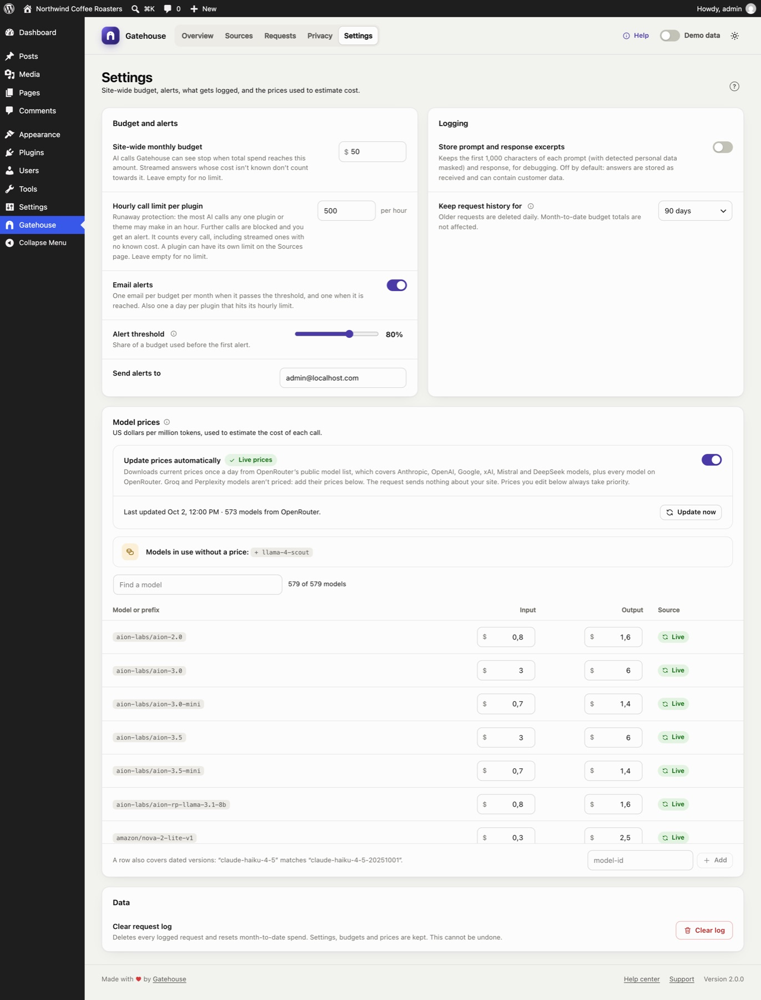

Settings

Changes on this page are saved when you click Save changes in the bar at the bottom of the screen. Discard undoes them. If you try to leave with unsaved changes, your browser warns you.
Budget and alerts#
Site-wide monthly budget#
The most your whole site may spend on AI in a calendar month, in US dollars. When total spend reaches it, every AI call is blocked until the 1st of next month or until you raise the budget. Leave it empty for no limit.
This works alongside per-source budgets on the Sources page. A call is blocked if either limit is reached.
Email alerts#
When on, Gatehouse emails you once when a budget passes the alert threshold, and once when it is reached. This applies to the site-wide budget and to each source's budget, at most once per budget per month.
Alert threshold#
The share of a budget that triggers the first alert: 50% to 95%, 80% by default. Sources above it also show Near budget.
Send alerts to#
The email address for alerts. It defaults to the site administrator's email. Alerts are sent with WordPress's normal email system. If you don't receive them, see Troubleshooting.
Logging#
Store prompt and response excerpts#
Off by default. When on, Gatehouse keeps the first 1,000 characters of each prompt (as sent, after redaction) and each response, shown in the Requests details. It only applies to calls made after you turn it on.
Turn it on only while you need it for debugging. Prompts and answers can contain customer data that redaction didn't catch.
Keep request history for#
30, 90 (default), 180 or 365 days. Older calls are deleted automatically once a day. Month-to-date budget totals are kept separately, so pruning old calls never resets a budget.
Model prices#

Gatehouse estimates each call's cost from the tokens it used and this price table. Prices are in US dollars per million tokens, with separate input and output prices.
Update prices automatically#
When on, Gatehouse downloads current prices once a day from OpenRouter's public model list. Nothing about your site is sent.
- The line below the switch shows when prices were last updated and how many models were included.
- Update now downloads immediately.
- If a download fails, the error is shown and the last good prices stay in use.
When off, the built-in prices are used. The line shows the Gatehouse version they came from and when they were checked. See How costs are calculated.
The price table#
Each row shows its Source:
- Live: downloaded automatically;
- Built-in: shipped with the plugin;
- Edited: a live or built-in price you changed;
- Custom: a model you added.
Use Find a model to search the table.
Editing prices#
- Change a price: type into the Input or Output box. The row becomes Edited. Reset returns it to the live or built-in price.
- Add a model: type its ID in the box at the bottom (for example
llama-4-scout) and click Add, then enter its prices. Added rows show Custom. Remove deletes them. - Models in use without a price: a banner lists every model your site has used that has no price. Click + model to add it as a row.
Your edits are kept when the plugin updates, and always take priority over live and built-in prices.
How a row matches a model#
A row matches a model ID when the ID is exactly the row's name, or starts with the row's name followed by a dash. If several rows match, the longest one wins. So:
claude-haiku-4-5also covers the dated versionclaude-haiku-4-5-20251001;claude-opus-5-5wins overclaude-opus-5for Claude Opus 5.5.
Unknown versions are never guessed. gpt-5 does not match gpt-5.6, so gpt-5.6 shows no price until you add it.
New prices apply to calls from then on. Calls already logged keep the cost recorded at the time.
Data#
Clear request log#
Deletes every logged call and resets month-to-date spend. Click the button, then Click again to confirm within four seconds. Settings, budgets, prices and your brief are kept. This can't be undone.
Clearing the log also resets this month's spend to zero, so any source that had reached its budget can make calls again.
Still stuck? Check Troubleshooting and the FAQ, or ask on the support forum. Inside WordPress, click Help at the top right of Gatehouse.